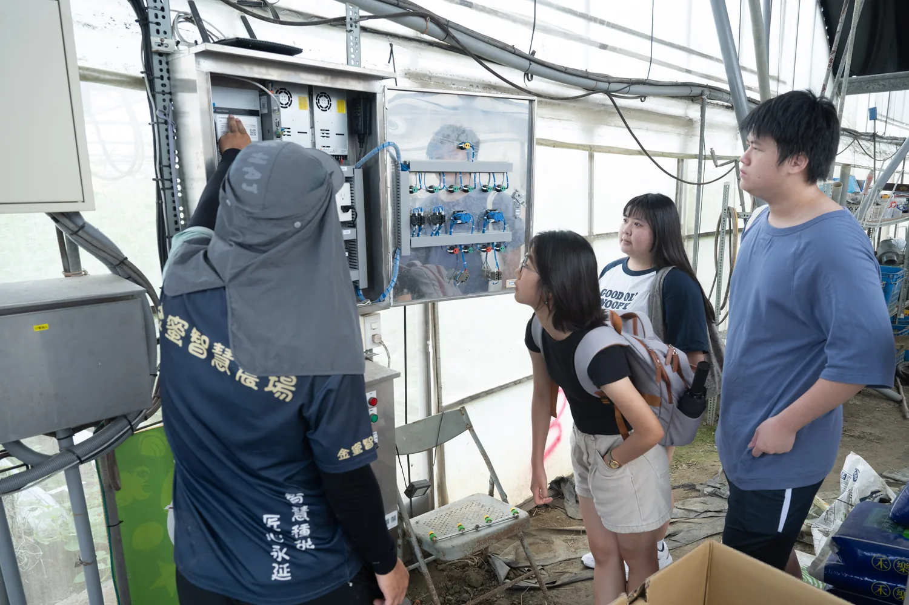

03 / FIELDWORK從農業現場
從農業現場
看見資訊落差
葉片出現異常時，農友不是只需要一個病名；還需要把作物、生育階段、症狀、環境和近期管理一起判斷。

現場問題
資訊很多，當下卻不容易找到
栽培手冊內容完整，但需要時間翻找；網路資訊更新快，來源品質卻不一致。農友在田間需要的，是能把問題快速對應到可靠資料的入口。
問題具有情境
相同的黃化症狀，可能來自養分、水分、根系或病害。
時間壓力真實存在
若資訊取得太慢，使用者容易直接依靠經驗或片段搜尋結果。
手機是主要入口
操作步驟、字級與按鈕必須適合現場快速查看。
「先理解農友怎麼問，才知道系統應該怎麼答。」
場域研究的價值，在於把抽象的 AI 功能轉回真實工作流程。